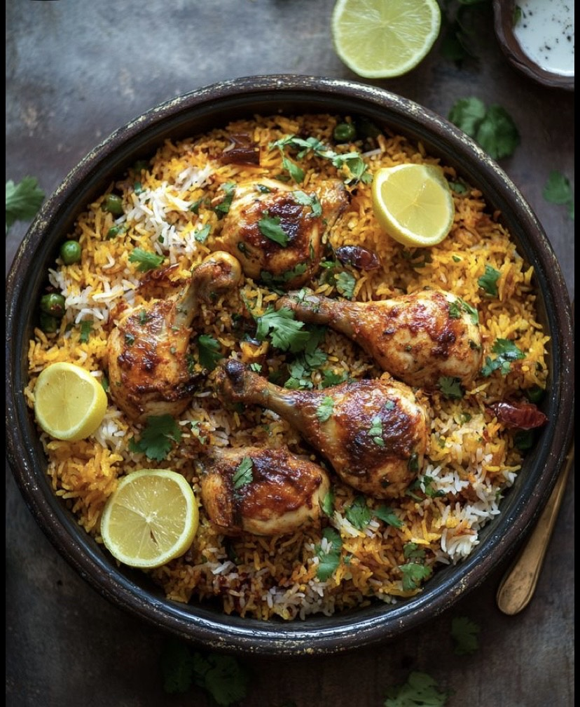
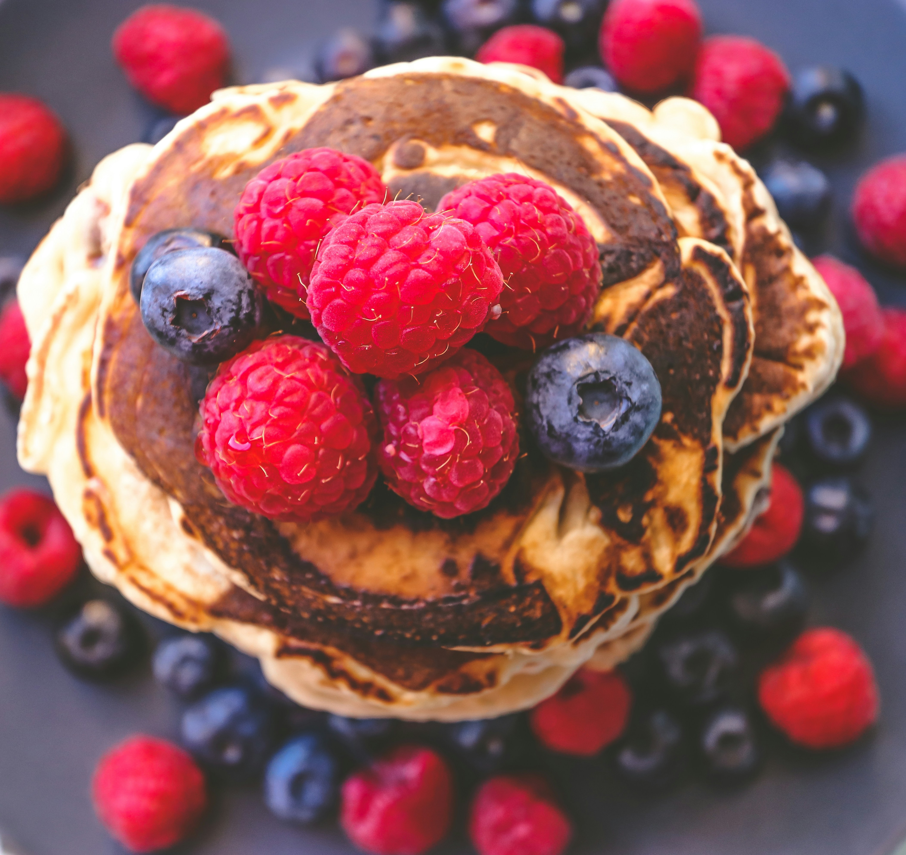
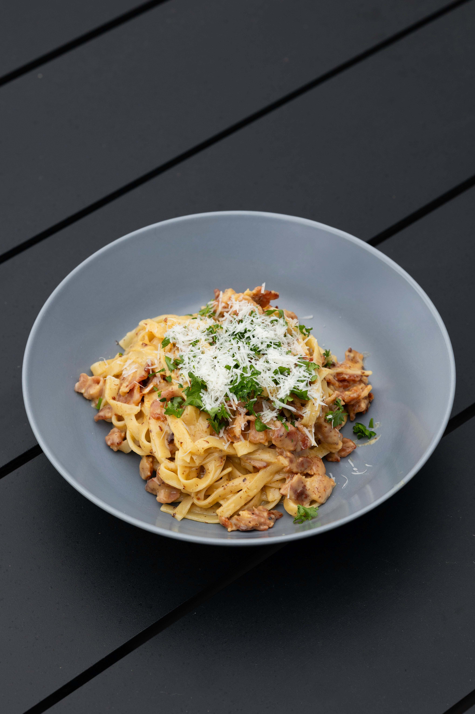
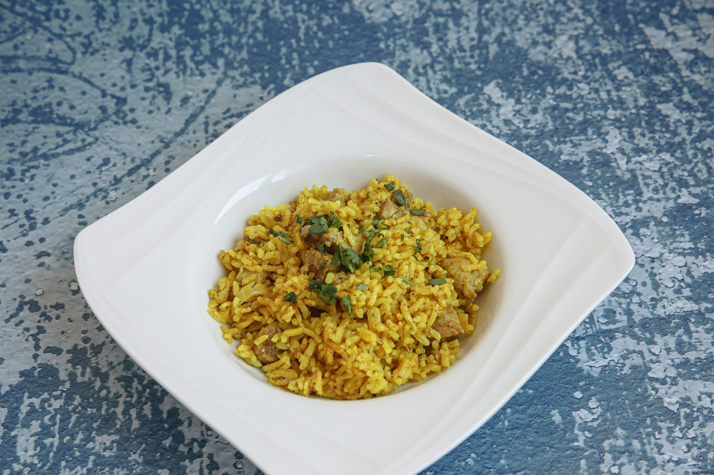
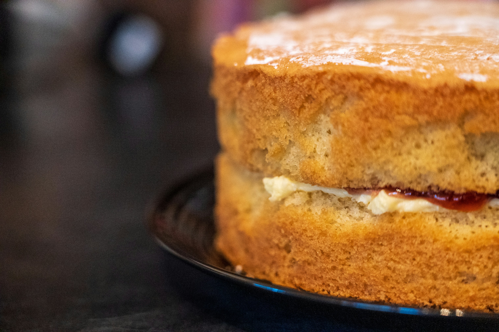
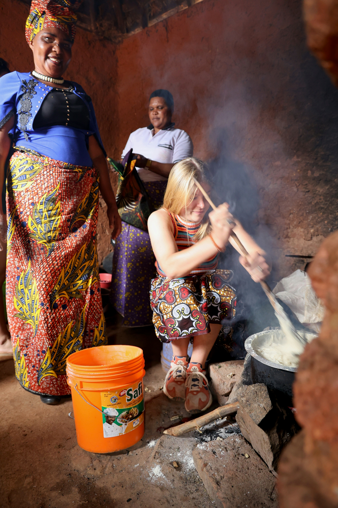
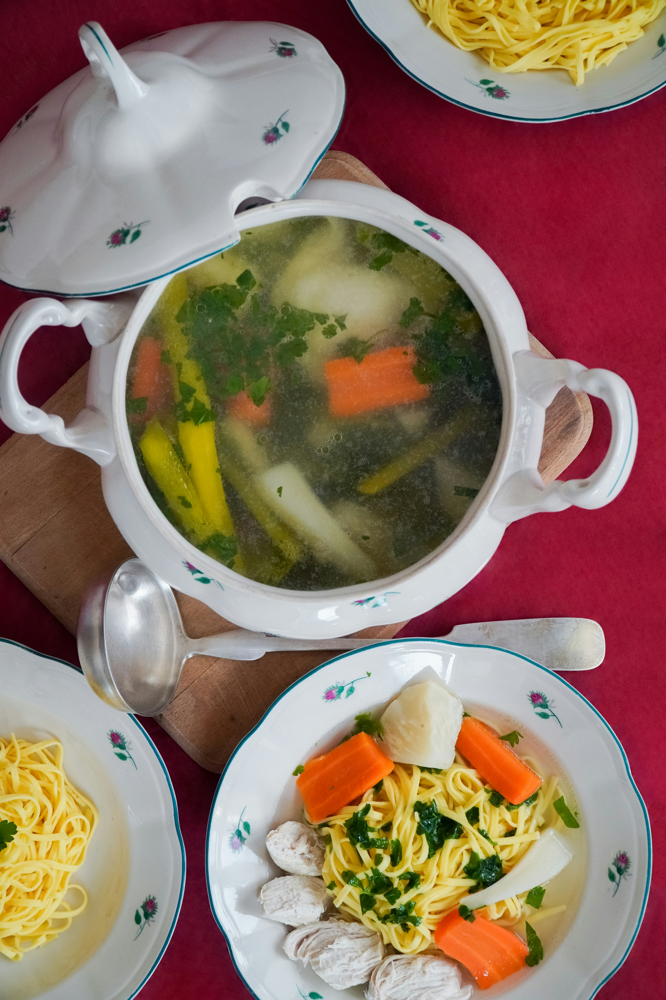

Overview
This is a simple recipe book showcasing a variety of dishes from different cuisines around the world.

Chicken Biryani
A fragrant and flavorful rice dish layered with spiced meat or vegetables, popular across South Asia.
Steps:
- Marinate chicken with yogurt, spices, and herbs for 1 hour.
- Fry onions until golden brown; set aside half for garnish.
- Cook marinated chicken with tomatoes and fried onions.
- Parboil basmati rice with whole spices.
- Layer chicken and rice in a pot, sprinkle saffron milk and fried onions.
- Cover and cook on low heat (dum) for 20-25 minutes.
- Garnish with coriander, mint, and serve hot.

Chocolate Cake
A rich, moist chocolate cake perfect for celebrations and sweet cravings.
Steps:
- Preheat oven to 180°C (350°F). Grease and flour a cake pan.
- Mix flour, cocoa powder, baking powder, and salt.
- In another bowl, beat sugar, eggs, and melted butter.
- Add dry ingredients alternately with milk, mixing well.
- Pour batter into pan and bake for 30-35 minutes.
- Let cool, then frost with chocolate icing.

Garden Salad
A fresh and crunchy salad with mixed greens, veggies, and a zesty dressing.
Steps:
- Wash and chop lettuce, cucumber, tomatoes, and carrots.
- Add sliced red onions and bell peppers.
- Toss vegetables in a large bowl.
- Drizzle with olive oil, lemon juice, salt, and pepper.
- Mix well and serve chilled.

Fluffy Pancakes
Light and airy pancakes, perfect for a delightful breakfast treat.
Steps:
- Mix flour, sugar, baking powder, and salt in a bowl.
- Whisk milk, eggs, and melted butter in another bowl.
- Combine wet and dry ingredients; mix until just combined.
- Heat a non-stick pan and pour batter to form pancakes.
- Cook until bubbles form, flip, and cook until golden.
- Serve with syrup, fruits, or your favorite toppings.

Classic Pasta
A timeless Italian pasta dish tossed in a savory tomato sauce.
Steps:
- Boil pasta in salted water until al dente; drain.
- Sauté garlic and onions in olive oil.
- Add tomato sauce, salt, pepper, and herbs; simmer.
- Toss cooked pasta in the sauce.
- Garnish with parmesan and basil. Serve hot.

Pilau
A spiced rice dish with meat or vegetables, popular in East African cuisine.
Steps:
- Sauté onions, garlic, and ginger in oil until golden.
- Add pilau spices (cumin, cardamom, cinnamon, cloves).
- Add meat and cook until browned.
- Stir in tomatoes and cook until soft.
- Add washed rice and mix well.
- Pour in water or broth, season with salt.
- Cover and cook on low heat until rice is done.

Sponge Cake
A light and airy cake, perfect for tea time or as a dessert base.
Steps:
- Preheat oven to 180°C (350°F). Grease a cake tin.
- Beat eggs and sugar until pale and fluffy.
- Gently fold in sifted flour and baking powder.
- Add melted butter and vanilla extract.
- Pour into tin and bake for 25-30 minutes.
- Cool before slicing and serving.

Nshima
In Zambia, we call it nshima while in other countries it is known as ugali or sadza. Nshima is literally my favourite meal of all time, and I could eat it every day!
Steps:
- Heat water to medium heat in a pot.
- Reduce heat to low and gradually whisk in cornmeal.
- Stir until thickened and smooth.
- Cover and cook for 5-10 minutes.
- Pour into a serving dish.
- Serve with a side of vegetables or meat.

Chicken Soup
A comforting and hearty soup, perfect for cold days.
Steps:
- Heat chicken broth in a pot.
- Add chopped vegetables and simmer.
- Stir in shredded chicken and season with salt and pepper.
- Simmer until vegetables are tender.
- Serve hot with crusty bread.